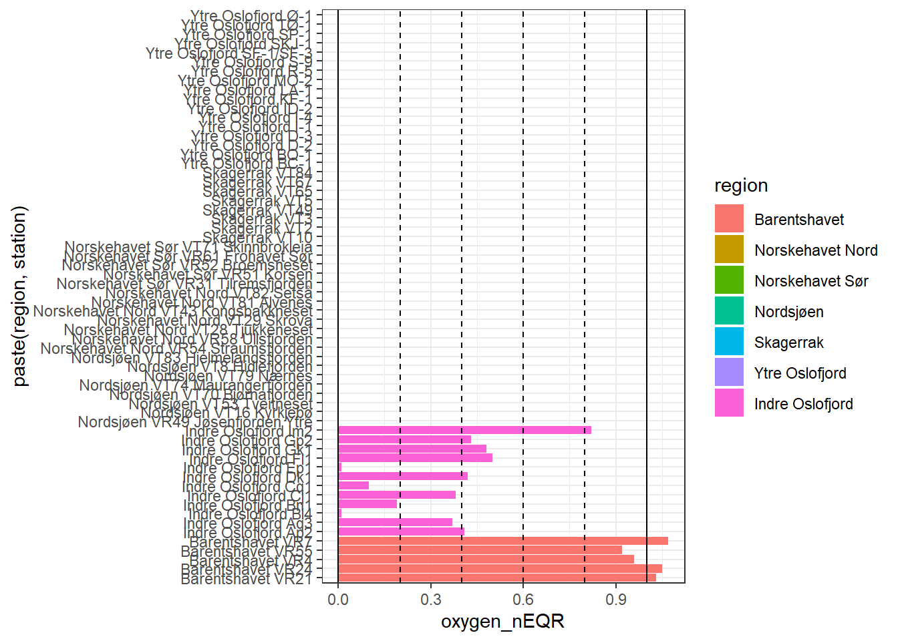
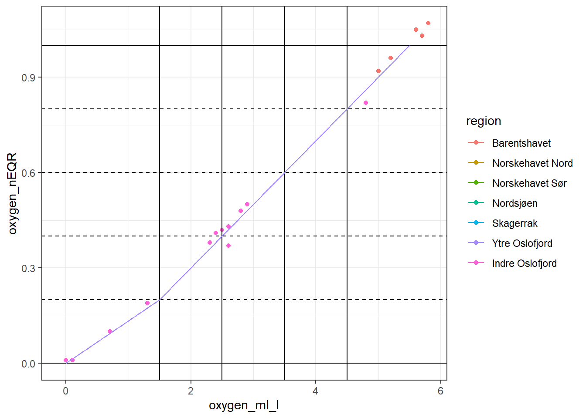

Background and rationale: Dissolved oxygen concentration in bottom waters is a key indicator of the ecological condition of coastal marine ecosystems. Oxygen is essential for the survival of benthic fauna and fish and for the functioning of biogeochemical processes in sediments. Reduced oxygen concentrations may occur naturally in deep or poorly ventilated water bodies, but anthropogenic nutrient enrichment (eutrophication) can exacerbate oxygen depletion through increased organic matter production and decomposition. Severe oxygen depletion may lead to habitat loss, altered species composition, reduced biodiversity, and, in extreme cases, total loss of all organisms except anaerobic microrganisms.
Methods: Dissolved oxygen is one of the indicators that is measured and reported in connection with the Water Framework Directive (hereafter WFD). In Norway, the WFD is implemented through Vannforskriften, and the ecological classification of oxygen conditions follows national guidelines (DGVF 2026). Measurements of oxygen concentration from coastal bottom waters are archived in the Vannmiljø database. Estimation follows a dataflow that has been described and documented earlier and consists of the following steps:
Selection of representative measurement stations
Measuring oxygen concentrations (and calculating oxygen saturation) in the entire water column including the bottom-water
Extracting minimum oxygen concentration for each station during the year
Scaling and transforming measurements to “normalized Ecological Quality Ratios” (nEQR) according to the normative definitions of ecological status categories provided by the WFD
Aggregating estimates geographically
Interpretation: An indicator value above 0.8 indicates oxygen conditions with insignificant human impact. Under pristine conditions, we expect the indicator to be approximately 1 unless the water body has low water exchange. An indicator value of zero corresponds to zero dissolved oxygen and total loss of higher life forms.
2. About the underlying data
2.1 Spatial and temporal resolution and extent
Spatial resolution: The spatial base unit of WFD oxygen indicators is the water body. Oxygen measurements are collected from coastal water bodies throughout Norway and archived in Vannmiljø. The indicator is based on oxygen conditions in bottom waters (deep water), reflecting the suitability of benthic habitats and the degree of oxygen depletion.
Temporal resolution: The nEQR is is normally based on measurements aggregated over a period of at least three consecutive years.
2.2 Sampling design
Dissolved oxygen concentration is measured using calibrated oxygen sensors or by chemical analysis of water samples collected near the seabed.
The indicator is intended to capture the period and location where oxygen concentrations are lowest and ecological effects are most likely to occur. Consequently, the assessment is generally based on the lowest relevant oxygen values observed during the assessment period.
Water bodies and stations have been hand-picked with the goal to be as representative as possible for the general conditions in the area. The number of monitored water bodies is low (<3 %) compared to the number of Norwegian coastal water bodies. Most water bodies have only one station. Some locations are monitored specifically because oxygen depletion is suspected or known to occur, whereas others are selected because they are considered reference sites.
2.3 Original units
Dissolved oxygen has been measured in millilitres per litre (ml L⁻¹) or percent saturation (%). In the WFD assessment framework, values are converted to normalized Ecological Quality Ratios (nEQRs) between 0 and 1, which constitute the ecosystem-condition indicator. For the purpose of this analysis, we use the nEQR sacle except that we do not truncate the indicator too the 0-1 range. As a result, if the miniumum oxygen concentration is above 5.5, the index will be slightly above 1, while the nEQR should be 1.
2.4 Instructions for citing, using and accessing data
WFD monitoring data are publicly available through Vannmiljø. Information on water bodies and water-body typologies can be obtained from Vann-Nett and associated geospatial datasets distributed by the Norwegian Environment Agency.
3. Indicator properties
The indicator NIVA_Oksygen represents ecological condition based on oxygen availability in coastal bottom waters. The indicator value corresponds to the WFD-derived nEQR for oxygen, bit is not truncated at 0 and 1.
3.1 Ecosystem Condition Typology Class (ECT)
The ECT of bottom-water oxygen is A2 (chemical state) because it characterizes the chemical condition of the water column, although it affects ecosystem functioning through its influence on species composition, habitat suitability, and benthic ecosystem processes.
3.1.1 Other condition typologies
In the Norwegian classification of ecological characteristics (økologiske egenskaper), oxygen concentration is most closely associated with abiotic factors, as it describes a physicochemical property of the aquatic environment.
Within the WFD classification system, oxygen belongs to the supporting physicochemical quality elements used in the assessment of ecological status.
3.2 Ecosystem condition characteristic
Intact coastal ecosystems are characterized by oxygen concentrations that support naturally occurring benthic and pelagic communities. High oxygen concentrations indicate good exchange between water masses and balanced ecosystem functioning. Reduced oxygen concentrations may indicate excessive organic loading, eutrophication, restricted water exchange, or altered hydrographic conditions.
3.3 Impact factors
Bottom-water oxygen conditions may be affected by:
Increased primary production and sedimentation of organic matter, due to anthropogentic nutrient enrichment and eutrophication
Reduced water exchange caused by local hydrodynamic conditions.
Climate-driven increases in water temperature, which reduce oxygen solubility.
Changes in freshwater discharge and stratification.
3.4 Spatial aggregation
We estimate marginal means per region as well as nationally, using a statistical model with water body as a random effect. This puts equal weight to each water body (Vannforekomst) irrespective of the number of stations in the water body. As we treat water body as a random effect )as opposed to a fixed effect), we take into account that the measured water bodies are just a sample of the existing water bodies. This yields a more conservative estimate, i.e. higher SE and wider confidence intervals. The R package emmeans was used for estimating marginal means. We estimated the national mean both by giving equal weight to the 7 “report areas” (5 Økokyst areas + Inner Oslofjord + Outer Oslofjord), and also by making an area-weighted average (See details in the code part below).
4. Reference condition and levels
4.1 Reference condition
The WFD defines the reference condition as the bottom-water oxygen levels expected under little or no anthropogenic influence, i.e. as expected under natural hydrographic conditions and without significant anthropogenic eutrophication or organic loading.
For coastal water bodies, the Norwegian classification system defines high ecological status as oxygen concentrations exceeding 4.5 ml O₂ l⁻¹ or oxygen saturation exceeding 65% in bottom waters. These thresholds are regarded as representing conditions where oxygen availability is sufficient to sustain naturally occurring benthic communities with little or no evidence of human-induced degradation.
4.2 Reference levels
Ecological status is classified using threshold values corresponding to the status classes bad, poor, moderate, good, and high. These thresholds are defined in the national classification guidance and vary among water-body types because oxygen conditions depend on hydrography, salinity, depth, and natural stratification patterns.
The indicator is expressed as a normalized Ecological Quality Ratio (nEQR), where:
Ecological status
Oxygen (ml O₂ l⁻¹)
Oxygen saturation (%)
High
> 4.5
> 65
Good
4.5-3.5
65-50
Moderate
3.5-2.5
50-35
Poor
2.5-1.5
35-20
Bad
< 1.5
< 20
nEQR intervals are given as follows:
Ecological status
nEQR interval
High
0.8-1.0
Good
0.6-0.8
Moderate
0.4-0.6
Poor
0.2-0.4
Bad
0.0-0.2
4.2.1 Spatial resolution and validity
Reference values are defined at the water-body level and vary among coastal water-body types. Only <3% of water bodies are monitored. On the other hand, waater-bodeis have been picked by experts in order to be representive of general conditions in the area.
5. Uncertainties
5.1 General uncertainties
The principal source of uncertainty is sampling error because only a subset of Norwegian coastal water bodies is monitored. Additional uncertainty arises from:
Temporal (betyween-year) variability in oxygen conditions. Infrequent events such as water mass renewal over fjord sills often have a large impact on oxygen conditions.
Spatial variability within water bodies.
Sensor calibration and measurement error. Sensors are routinely tested and calibrated under controlled conditions.
The extrapolation of conditions to water bodies lacking measurements.
5.2 Reported uncertainties
Reported uncertainties are inferential and reflect uncertainty around the estimated indicator values, using water body as the sample unit (see 3.4).
6. Code for data assembly and analysis
Read main data (dat_1)
Need only 2024 reports, since they report summary numbers based on the yeasr 2022-2024 - which fits well here
Extracted using MS Copilot
After that, several corrections done for Inner Oslofjord categorization
Dk1 changed from “god” to “moderat”, several others changed to “dårlig”/“meget dårlig”
Warning: Removed 45 rows containing missing values or values outside the scale range
(`geom_col()`).

Plot nEQR vs concentration, from reports
Code
ggplot(dat_5, aes(oxygen_ml_l, oxygen_nEQR, color = region)) +geom_point() +# status limits geom_vline(xintercept =c(1.5,2.5,3.5,4.5)) +# expected line nEQR ~ oxygen concentration (two parts); geom_hline(yintercept =c(0,1)) +geom_hline(yintercept =c(0.2,0.4,0.6,0.8), linetype ="dashed") +geom_segment(x =0, y =0, xend =1.5, yend =0.2) +geom_segment(x =1.5, y =0.2, xend =5.5, yend =1) +theme_bw()
Warning: Removed 45 rows containing missing values or values outside the scale range
(`geom_point()`).

Calculate oxygen index missing nEQR values (dat)
the index is very similar to nEQR, except that for the purpose of making indicators for ecosystem condition, we choose to not truncate the index to the interval 0-1 (oxygen conecntrations above 5.5 will get index > 1, but nEQR will be = 1)
for oxygen_ml_l between 0 and 1.5: nEQR = 0.133*oxygen_ml_l
for oxygen_ml_l between 1.5 and 5.5: nEQR = -0.5 + 0.2*oxygen_ml_l
Code
# two different regression lines (for oxygen_ml_l below / above 1.5) # oxygen_nEQR should normally not be >1 or <0 dat <- dat_5 |>mutate(oxygen_index =case_when(!is.na(oxygen_nEQR) ~ oxygen_nEQR, oxygen_ml_l >=1.5~-0.1+0.2*oxygen_ml_l, oxygen_ml_l <1.5~0.2/1.5*oxygen_ml_l) )
library(leaflet)library(leafem)# set colourscols <-c("black", "pink2", "brown", "green3", "purple", "blue", "red")factpal <-colorFactor(cols, dat$region)lf <-leaflet(dat) |>addTiles() |>addCircles(lng =~Lengdegrad, lat =~Breddegrad, color =~factpal(region)) |>addMouseCoordinates()
Find mean values
Means by region
We estimate marginal means per region (using R package emmeans)
This puts equal weight to each water body (Vannforekomst) irrespective of the number of stations in the water body
Also, we treat water body as a random effect, i.e. we take into account that the large majority of water bodies are not sampled
Code
# start table tab_region <- dat |>count(region, period, Vannforekomst_id) |>group_by(region, period) |>summarise(n_stations =sum(n),n_waterbodies =n(), .groups ="drop" )# tab_regions# estimate means per region, using water body as main unit# treating water body as a random effect (this to some extent taking into # account that the large majority of water bodies are not covered)# statistical modelmod1 <-lmer( oxygen_index ~ region + (1| Vannforekomst_id),data = dat)# estimate marginal means means_region <-emmeans(mod1, ~region) means_region_s <-summary(means_region) |>as.data.frame()# add to tabletab_region$index_mean <- means_region_s$emmeantab_region$index_SE <- means_region_s$SEtab_region$CI95_lo <- means_region_s$asymp.LCLtab_region$CI95_up <- means_region_s$asymp.UCLtab_region <- tab_region |>select(region, period, index_mean, index_SE, CI95_lo, CI95_up, n_waterbodies, n_stations)tab_region |>as_hux() |>set_number_format(row =-1, col =3:6, value =3) |>set_bold(row =1, col = everywhere)
region
period
index_mean
index_SE
CI95_lo
CI95_up
n_waterbodies
n_stations
Barentshavet
2022-2024
1.006
0.105
0.800
1.212
5
5
Norskehavet Nord
2022-2024
0.853
0.089
0.678
1.027
7
7
Norskehavet Sør
2022-2024
0.762
0.105
0.556
0.968
5
5
Nordsjøen
2022-2024
0.535
0.083
0.372
0.699
8
8
Skagerrak
2022-2024
0.728
0.083
0.565
0.892
8
8
Ytre Oslofjord
2021-2023
0.436
0.060
0.318
0.553
15
17
Indre Oslofjord
2022-2024
0.335
0.080
0.177
0.492
8
12
National mean, without area weighting
Each region have equal weight (independent of number of stations)
Code
tab_national <- dat |>mutate(region ="Norway") |>count(region, Vannforekomst_id) |>group_by(region) |>summarise(n_stations =sum(n),n_waterbodies =n() )# mean putting equal weight on regionsmeans_national <-emmeans(mod1, ~1)means_national_s <-summary(means_national)# tab_national$index_mean <- means_national_s$emmeantab_national$index_SE <- means_national_s$SEtab_national$CI95_lo <- means_national_s$asymp.LCLtab_national$CI95_up <- means_national_s$asymp.UCLtab_national <- tab_national |>select(region, index_mean, index_SE, CI95_lo, CI95_up, n_waterbodies, n_stations)tab_national |>as_hux() |>set_number_format(col =2:5, value =3) |>set_bold(row =1, col = everywhere)
region
index_mean
index_SE
CI95.000_lo
CI95.000_up
n_waterbodies
n_stations
Norway
0.665
0.033
0.600
0.730
56
62
Set region2
We set region2 for the purpose of area-weighting of indices
region2 is equal to ecoregions except that “Indre Oslofjord” is split off from “Skagerrak” and “Ytre Oslofjord”
The rest of the Skagerrak area we call “Skagerrak/Ytre Oslofjord”, as “Skagerrak” and “Ytre Oslofjord” overlap spatially
# start table tab_region2 <- dat |>count(region2, Vannforekomst_id) |>group_by(region2) |>summarise(n_stations =sum(n),n_waterbodies =n() ) |>left_join( lookup_region2_areas, by =join_by(region2))# tab_region2# estimate means per region2, using water body as main unit# treating water body as a random effect (this to some extent taking into # account that the large majority of water bodies are not covered)# statistical modelmod2 <-lmer( oxygen_index ~ region2 + (1| Vannforekomst_id),data = dat)# estimate marginal means means_region2 <-emmeans(mod2, ~region2) means_region2_s <-summary(means_region2) |>as.data.frame()# add to tabletab_region2$index_mean <- means_region2_s$emmeantab_region2$index_SE <- means_region2_s$SEtab_region2$CI95_lo <- means_region2_s$asymp.LCLtab_region2$CI95_up <- means_region2_s$asymp.UCLtab_region2 <- tab_region2 |>select(region2, area_km2, index_mean, index_SE, CI95_lo, CI95_up, n_waterbodies, n_stations)tab_region2 |>as_hux() |>set_number_format(row =-1, col =2, value ="%i") |>set_number_format(row =-1, col =4:6, value =3) |>set_bold(row =1, col = everywhere)
region2
area_km2
index_mean
index_SE
CI95_lo
CI95_up
n_waterbodies
n_stations
Barentshavet
17337
1.01
0.113
0.785
1.227
5
5
Norskehavet Nord
29091
0.853
0.095
0.666
1.040
7
7
Norskehavet Sør
33405
0.762
0.113
0.541
0.983
5
5
Nordsjøen
13669
0.535
0.089
0.361
0.710
8
8
Skagerrak/Ytre Oslofjord
3856
0.537
0.052
0.435
0.639
23
25
Indre Oslofjord
211
0.335
0.087
0.165
0.504
8
12
National mean, with area weighting
Each region have equal weight (independent of number of stations)
Putting equal weight on the “report areas”, the national nEQR mean (giving equal weight to regions) is 0.665 with a standard error of 0.033. Weighting the data by region area yields a national nEQR mean of 0.791 with a standard error of 0.053.
if (FALSE){## CODE APPENDIX: calculating areas of region2 ('lookup_region2_areas' above)library(dplyr)library(sf)library(datapasta) # tribble_paste(), not strictly necesssary but handy## 1. Read geodata for marine ecoregions ## downloaded from GeoNoirge Kartlatalogen# https://kartkatalog.geonorge.no/metadata/administrative-omraader-vanndirektivet-wms/50263c33-74bc-4ea8-b44e-a0c470e57904 wb_orig <-read_sf("C:/Data/Mapdata/NVE_Water_framework_directive/NVEData/Vanndirektiv_OekoregionMarin.geojson") # wb_orig$arealKvadratkilometer# wb_orig$oekoregionMarinnavn# transform to long. lat (for leaflet) wb <- wb_orig |>st_transform(4326)## 2. Split Skagerrak region in two: "Indre Oslofjord" and "Skagerrak/Ytre Oslofjord"# wb_skag <- wb |>filter(oekoregionMarinnavn =="Skagerak")plot(wb_skag["oekoregionMarinnavn"]) # use leaflet to define a rectangle encompassing Indre Oslofjord # (by reading mouse coordinates from the screen) library(leaflet)library(leafem)leaflet(wb_skag) |>addTiles() |>addPolygons() |>addMouseCoordinates()# lower left corner: 10.453, 59.667# upper right corner:10.90, 59.95# Rectangle coordinates (lon/lat) rect_coords <-matrix(c(10.453, 59.667, # lower left10.900, 59.667, # lower right10.900, 59.950, # upper right10.453, 59.950, # upper left10.453, 59.667# close polygon ),ncol =2,byrow =TRUE )# Create geodata from rectangle coordinates rect_sf <-st_sf(geometry =st_sfc(st_polygon(list(rect_coords)),crs =4326 ) )# Transform rectangle to same CRS as waterbody layer rect_sf <-st_transform(rect_sf, st_crs(wb))# plot(rect_sf)# Skagerak polygon skag <- wb %>%filter(oekoregionMarinnavn =="Skagerak")# find and repair geometry problemst_is_valid(skag)st_is_valid(rect_sf) skag <-st_make_valid(skag)# Part inside rectangle skag_rect <-st_intersection(skag, rect_sf)# Remaining part skag_rest <-st_difference(skag, st_geometry(rect_sf))# Give distinct names skag_rect$oekoregionMarinnavn <-"Indre Oslofjord" skag_rest$oekoregionMarinnavn <-"Skagerrak/Ytre Oslofjord"## 3. Replace the old Skagerrak region with the two parts ## Replace original polygon with the two new ones wb_new <- wb %>%filter(oekoregionMarinnavn !="Skagerak") %>%bind_rows(skag_rect, skag_rest)## 4. Add area column ## find and repair geometry problemst_is_valid(wb_new) wb_new <-st_make_valid(wb_new) # add area column wb_new$area_km2 <-as.numeric( units::set_units(st_area( wb_new), km^2) |>round(0) ) # Check all areasplot(wb_new["oekoregionMarinnavn"]) # Check the manipulated areas check <- wb_new |>filter(oekoregionMarinnavn %in%c("Skagerrak/Ytre Oslofjord", "Indre Oslofjord"))plot(check["oekoregionMarinnavn"]) # # 5. Get area data ## Get areas as data frame dat_area1 <- wb_new |>st_drop_geometry() |> datapasta::tribble_paste()}